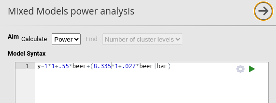
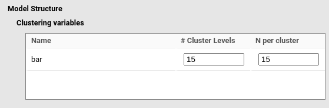
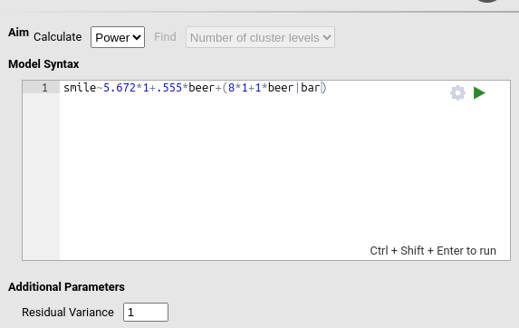
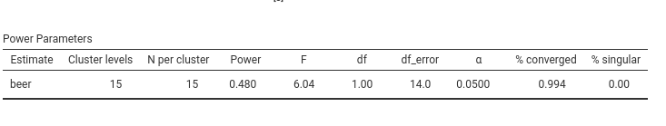

Mixed vs rsim R package
0.8.0
Comparing software results for power analysis in mixed models is not
straightforward.
In this tutorial, we use the R package simr (Green and MacLeod
2016), which computes the power of a mixed model given a
fixed number of cluster levels and a fixed N per cluster. Since
our goal is to assess the congruence of results across software, we
adopt a post-hoc power approach: we begin by computing power from an
observed model, and then adjust its parameters to mimic a pre-study
power analysis.
Data
The data consist of example simulated observations from the GAMLj3 module dataset named Beers. The dataset includes a continuous dependent variable (smile) and a continuous predictor (beer). Cases are clustered within levels of the variable bar, representing a design where 15 bars are sampled, each containing a varying number of individuals. Bar sizes range from 3 to 24, with an average of about 15.
We estimate a mixed model with random intercepts and random slopes across bar, and with beer as a fixed effect. Results are shown below.
library(GAMLj3)
library(lme4)
data<-beers_bars
model0<-lmer(smile~beer+(1+beer|bar),data=data)
summary(model0)## Linear mixed model fit by REML ['lmerMod']
## Formula: smile ~ beer + (1 + beer | bar)
## Data: data
##
## REML criterion at convergence: 810
##
## Scaled residuals:
## Min 1Q Median 3Q Max
## -3.02941 -0.63560 0.05347 0.67706 2.67218
##
## Random effects:
## Groups Name Variance Std.Dev. Corr
## bar (Intercept) 8.33527 2.8871
## beer 0.02786 0.1669 -0.84
## Residual 1.43136 1.1964
## Number of obs: 234, groups: bar, 15
##
## Fixed effects:
## Estimate Std. Error t value
## (Intercept) 5.67259 0.81472 6.963
## beer 0.55546 0.09251 6.005
##
## Correlation of Fixed Effects:
## (Intr)
## beer -0.697simr
We first estimate the power of this model using the R package simr (Green and MacLeod 2016).
Power for predictor 'beer', (95% confidence interval):
100.0% (99.63, 100.0)
Test: Type-II F-test (package car)
Effect size for beer is 0.56
Based on 1000 simulations, (35 warnings, 0 errors)
alpha = 0.05, nrow = 234
Time elapsed: 0 h 2 m 53 s
nb: result might be an observed power calculationThus, we obtain a power estimate of 1 (we will later modify the model to obtain a more informative scenario).
PAMLj
We now replicate the results in PAMLj.
First, we define the model using the mixed-model estimates, entering the
fixed coefficients, random variances, and the residual variance.


We then specify the structure of the data by declaring bar
as the clustering variable with # Cluster Levels = 15 (the
15 bars in the dataset) and N per cluster = 15, chosen
based on the average bar size.

The aim of the analysis is set to
Aim: calculate Power.
The resulting power is 1, consistent with the estimate obtained with
simr.

Expected power
Agreement between software when power = 1 is not very informative,
since power = 1 is essentially an asymptotic result.
To generate a more meaningful comparison, we now modify the model as if
performing a prospective power analysis and enter expected parameter
values.
We begin by changing the random variances of the model:
Setup
- Fixed coefficients: 5.672, 0.555
- Random intercept variance: 8
- Random slope variance: 1
- \(\sigma^2\): 1
- Number of Cluster Levels: 15
- N per cluster: 15 (for
simr, cluster size varies based on the observed data)
simr
fixed<-c(5.672,.555)
randomVar<-matrix(c(8,0,0,1),ncol=2)
model1<-makeLmer(smile~beer+(1+beer|bar),fixef = fixed,VarCorr = randomVar,data=data,sigma = 1)Power for predictor 'beer', (95% confidence interval):
45.70% (42.58, 48.85)
Test: Type-II F-test (package car)
Effect size for beer is 0.56
Based on 1000 simulations, (1 warning, 0 errors)
alpha = 0.05, nrow = 234
Time elapsed: 0 h 2 m 24 sThis yields a power estimate of 0.457.
PAMLj
In PAMLj, we update the parameters accordingly:

and we obtain a closely matching result (simulation-based estimates naturally vary slightly across runs):

Required N
The package simr does not compute required sample sizes;
it only computes power for a given model and sample size.
However, we can assess the PAMLj
Required N function as follows:
Given the setup above, we use PAMLj
to compute the number of clusters needed to achieve a target power of
.90, and then check whether simr produces a power close to
.90 using the indicated sample size.
To do this, we change the aim of the analysis in PAMLj to Aim: N and set
Find: Number of cluster levels.
PAMLj indicates that a sample of 39 bars would yield an approximate power of 0.907 (effectively .90).

To verify the result R, we extend the original sample to 39 clusters
and run a new simulation with simr:
### extend the model to obtain 39 levels of bar
mod<-extend(model1,along="bar",n=39)
### run the simulation
pow<-powerSim(mod,nsim=1000,test = fixed("beer","f"))Power for predictor 'beer', (95% confidence interval):
88.40% (86.25, 90.32)
Test: Type-II F-test (package car)
Effect size for beer is 0.56
Based on 1000 simulations, (3 warnings, 0 errors)
alpha = 0.05, nrow = 614
Time elapsed: 0 h 3 m 33 sAs expected, the estimated power is close to .90, consistent with the value suggested by PAMLj.
Comments?
Got comments, issues or spotted a bug? Please open an issue on PAMLj at github or send me an email